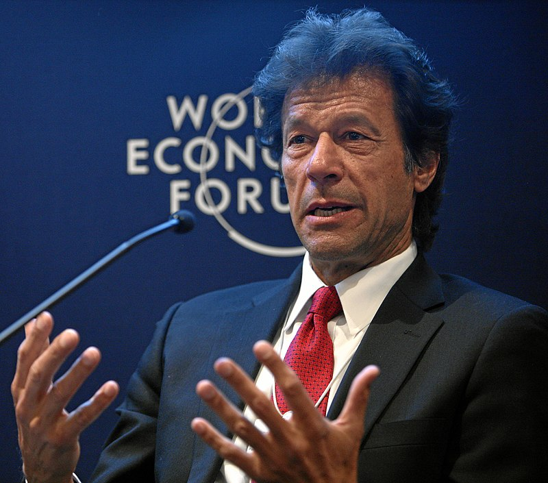
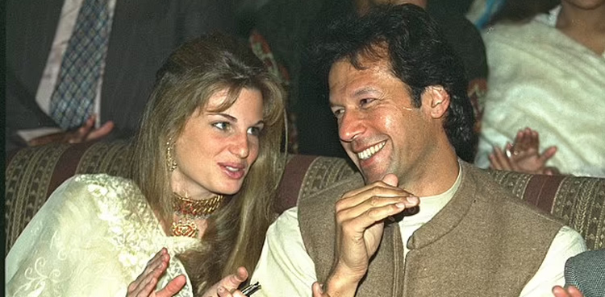

|
Imran Khan was born on 25, November 1952. He is the great politician and former cricketer in Pakistan. Imran Khan was a shy kid and was born in upper middle class family. He studied Philosophy, Politics and Economics. He married in 16 May 1995 with Jemima. The couple has two sons, Sulaiman Issa and Qasim. The marriage failed to last for long and divorced his wife. His second marriage failed as well and lasted only for few months. He is currently married to Bushra Bibi who supports him in his movement of better Pakistan. Imran Khan entered politics in the late 1990s but faced challenges in gaining significant electoral success initially. His party, Pakistan Tehreek-e-Insaf (PTI), gained traction over the years, presenting itself as an anti-corruption and reform-oriented political force. In the 2018 general elections, PTI emerged as the single largest party in the National Assembly of Pakistan. Imran Khan was elected Prime Minister of Pakistan after forming a coalition government. You can check more about PTI by clicking here |
 |
|  |
Imran Khan is the Founding Chairman Board of Governors of Shaukat Khanum Memorial Cancer Hospital & Research Centre and Chancellor of the University of Bradford. He wast he best cricket player as well as captain of Pakistan Cricket Team. Imran Khan Naizi became the polictial party chairman of Pakistan Tehreek-e-Insad in 25 April 1996. He is the great Leader. In this page, you will read Imran Khan Naizi news and biography in Urdu and Roman Urdu. Imran Khan's tenure has faced challenges, including economic pressures, political opposition, and criticism over handling certain domestic and foreign policy issues. His government's response to various crises and reforms has been a subject of debate and scrutiny. Imran Khan is known for his philanthropic efforts, including the establishment of Shaukat Khanum Memorial Cancer Hospital & Research Centre in Lahore, named after his mother. He has been married multiple times and has children from his marriages. Imran Khan remains a prominent figure in Pakistani politics and society, known for his charisma, leadership in cricket, and vision for a "Naya Pakistan" (New Pakistan). His leadership continues to shape Pakistan's political landscape and its approach to governance and development. More about Imran Khan |
| Competition | Test | ODI | FC | LA |
|---|---|---|---|---|
| Matches | 88 | 175 | 382 | 425 |
| Runs scored | 3,807 | 3,709 | 17,771 | 10,100 |
| Batting average | 37.69 | 33.41 | 36.79 | 33.22 |
| Bowling average | 22.81 | 26.61 | 22.32 | 22.31 |